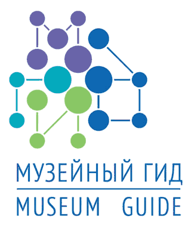

Программа «Первая публикация» существует с 2007 года и является оперативным инструментом в реализации долгосрочной стратегии Благотворительного фонда В. Потанина по сохранению, исследованию и актуализации культурного наследия России. За пять лет её работы экспертами было рассмотрено около 400 заявок от государственных музеев и музейных организаций России, издано 10 книг, организовано 9 выставок. На сайте Программы представлены электронные версии вышедших книг, некоторые издания получают продолжение в виде бесплатных приложений для планшетных компьютеров.
Интеллектуальная и организационная поддержка, оказываемая музеям в рамках Программы, позволяет выявлять музейные раритеты и ценные музейные коллекции для их дальнейшей популяризации в различных информационных форматах.

Издательский проект «Музейный гид. Путеводители по музеям России – 2012» был представлен осенью в 2012 году на одноимённом фестивале. Путеводитель включает 16 брошюр, каждая брошюра посвящена одному музею и включает: Государственный Эрмитаж, а также победителей конкурсов «Меняющийся музей в меняющемся мире» и «Первая публикация». Одна из главных идей издания — сочетание полной справочной информации о музее и эссеистического подхода к описанию музейных коллекций. Каждая брошюра содержит практическую информацию: визитную карточку музея (история, состав коллекции и пр.), информацию для посетителей (контакты, режим работы, выходные дни, экскурсии и т. д.), карты и различные подсказки, каким образом лучше добраться до музея и где остановиться в городе. В путеводителе коллекции раритетов представляют хранители, а о музеях рассказывают их посетители, историки искусства, журналисты и культурологи.